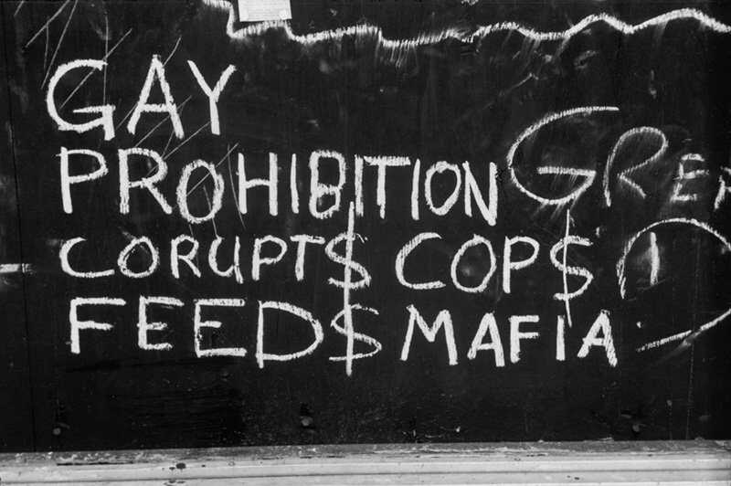
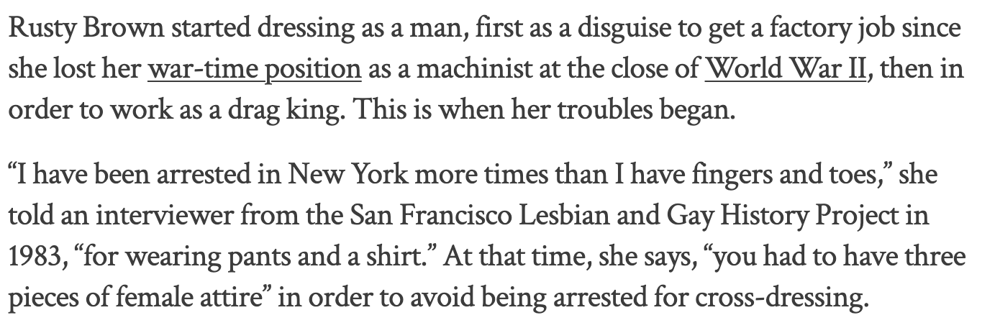
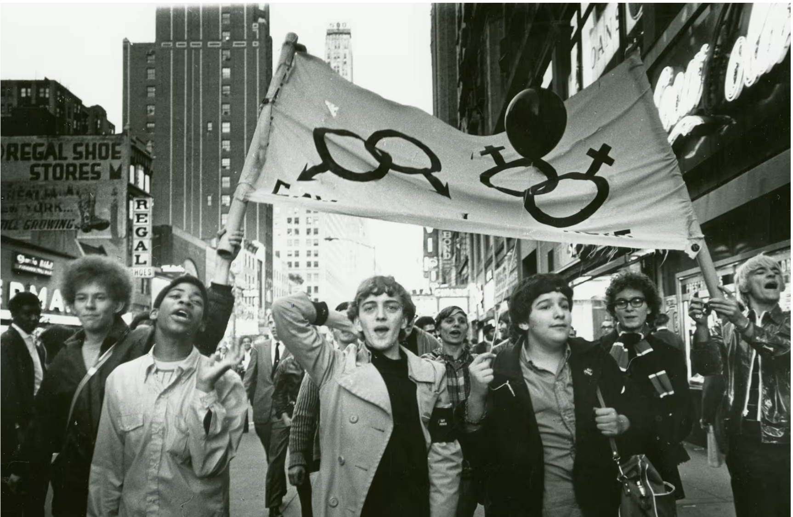

Stonewall Inn, New York, NY, 1969
Here I was, a “true local”, I could even tell you how to get to the Stonewall Inn
 :
If you’re taking the train, you’re wanting to take the 1 train and get off at the Christopher Street station.
:
If you’re taking the train, you’re wanting to take the 1 train and get off at the Christopher Street station.
 Up the stairs and across the park.
Up the stairs and across the park.
It’s private though, took me a second to get the a-okay, see, all I had to do was look lost and gay.
People tended to flock to those who need company.

It’s been a year now, though, and I’m starting to finally get a lay of the land. I can tell you a lot by now. I can tell you the good stuff and the bad stuff.
The good stuff? It’s somewhere I can go and be myself. It’s one of the only places I can dance with another man and I’m not going to have my ass beat, or, well, be arrested.
The bad stuff?
Well, I can still be arrested. I can still have my ass beat. The drinks are shit and watered down. The open secret here is that the mafia owns the place

At least tonight there shouldn’t be a raid. There was a raid earlier in the week and they normally don’t come twice-
Look, it’s like, one in the fucking morning. I already hear some chat around me that someone heard the police outside. This sucks, this sucks, I’m pretty sure I don’t have my ID on me tonight, I’m going to have to leave with someone and stick behind them so I’m not pulled out of the crowd. But-
SHIT!
THEY’RE COMING IN-
They’re yelling to shut down the music-
The jukebox is unplugged, the DJ stops.
There are so many of us tonight, 150 at least, this is crazy. The energy is scary. I hate this. It’s been so restless lately. So many people we know are barely handling random nights in jail.
 Constantly being ID’d.
Constantly being ID’d.
 Even my lady friends get thrown in the back of the cab for wearing pants and having short hair-
Even my lady friends get thrown in the back of the cab for wearing pants and having short hair-
Most nights we’re taken out and people leave, of course, we’re tired and stressed and no one wants to mess with these cops.
I keep bumping into shoulders.
 I can barely see ahead of me. I wonder if some people are just onlookers. It has been so bad lately.
I can barely see ahead of me. I wonder if some people are just onlookers. It has been so bad lately.
That’s all I can think about. How bad it’s been. I’ve heard of the protests elsewhere from visitors. 1966 Compton’s Riot in California, Julius’ Bar up the way…
Will we ever be seen as citizens? Citizens with civil rights?
All of the sudden I realize I haven’t been able to move. My heart races because what if I get pulled out of the line of people? Yelling has been going on for a minute but I didn’t realize until just now that it’s no longer the yells of the police, it’s the yells of the people. Other people on the street are coming out in droves, screaming out and jeering. Everyone is pushing and shoving.
I see the police manhandling a woman I recognize, I think, and all of the sudden I hear her scream:
”Why don’t you guys do something!?”
Why don’t we do something? I feel like I have been running all of my life, just letting things happen and leaving when it gets too hard…
A sudden smash against the windows of the bar!
The police are outnumbered now. Too many people are pushing them, and I suddenly see them running BACK INTO THE STONEWALL INN?
The police have trapped themselves into the bar they just raised.
I look around again and I see lines of more police being stopped by...
A KICK-LINE?
I'm dodging trash and stones being thrown, but I no longer feel afraid.
I don’t know how, but I see sparks of fire beginning against the edge of the building.
The crackling of the fire is intense.I can see it from where I stand. Around me people are screaming.
As I look up at the fire and listen to the cheers, my fear is completely gone.
I begin to laugh.
I hope this fight continues.
I really do.
